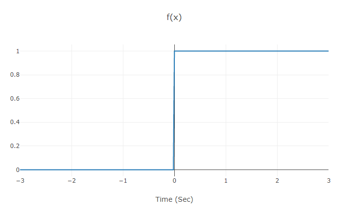

Make sure that f(x) and g(x) are valid functions before starting convolution.
Consider the shift and range of f(x) and g(x). They affect the result of convolution. For example consider the following diagram:
You may think this diagram equals heaviside(x) while it equals heaviside(x) - heaviside(x-3). Take care!!! (In this example the range is [-3,3].)
You can save any diagram. Zoom, AutoScale and many other options are available on top of every diagram by hovering it.